Wir stärken Frauen in Gambia durch Ausbildung, kreative Produkte und wirtschaftliche Selbstständigkeit.
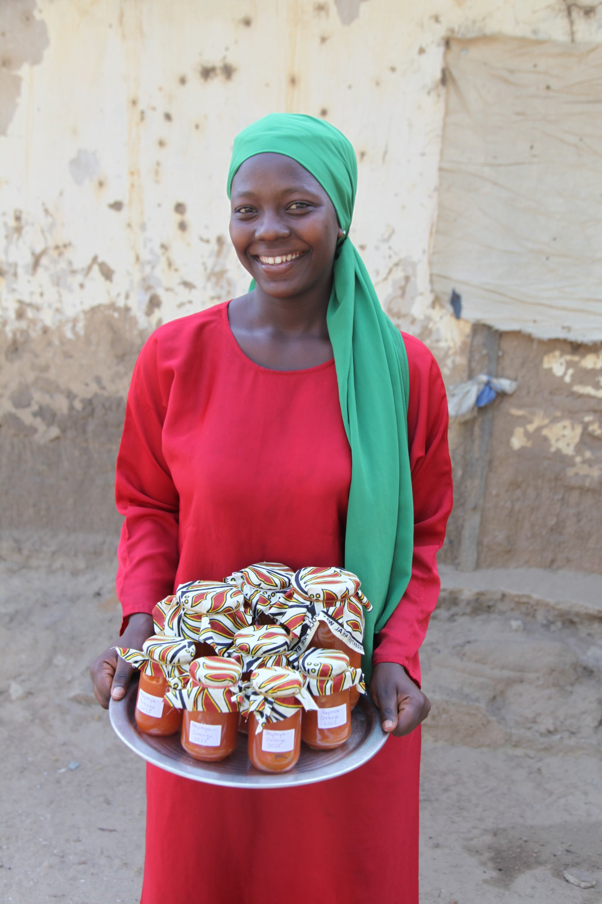
ILA SINNING bedeutet: Bau deine Zukunft auf. ILA SINNING ist unser Frauenprojekt.
Viele Frauen wollen sich ein kleines Business aufbauen oder ein Handwerk erlernen. ONE LOVE – ONE HEART e.V. unterstützt sie dabei, unabhängig zu werden.
Wir finanzieren ihre schulische, universitäre oder handwerkliche Ausbildung.
Wir ermöglichen Start-Ups.
Wir stellen Materialien und Produktionsmittel zur Verfügung.
Wir arbeiten dezentral, mit Frauen aus verschiedenen Regionen.
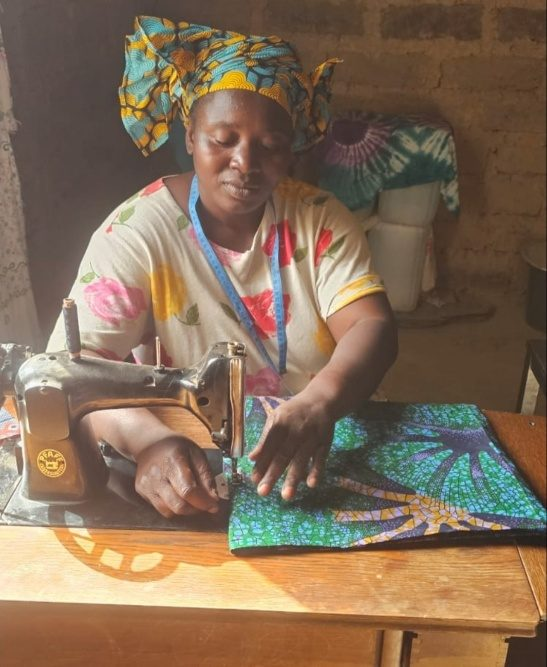
Fatou will nähen
ONE LOVE – ONE HEART e.V. bildet Schneiderinnen aus.
Wir finanzieren die Schule, die Ausbildung, unterstützen die Familie, helfen mit Rat und Tat, damit die Ausbildung gelingt.
Wir bringen die Nähmaschinen dorthin, wo sie gebraucht werden, auch in Gegenden ohne Strom.
Wir sorgen dafür, dass die Frauen praktische Anleitung im Schneidern bekommen.
Da Gambia von europäischer Kleidung überschwemmt wird, verlegen wir uns mehr auf Upcycling. Dabei entstehen Unikate – einzigartige Afro-Design-Kunstwerke! Die könnt ihr vor Ort, in Deutschland in unserem ebay-Charity-Shop ILA SINNING und auf La Gomera kaufen.
ONE LOVE – ONE HEART bringt Wissen dorthin, wo es gerne aufgenommen wird. Die Kulturtechnik des Marmeladekochens gibt es in Gambia auch, nur ganz anders. Das Obst wird solange gekocht, bis das Wasser verdampft ist. Pektin ist unbekannt. Wir führen es ein. Die Frauen lernen, wie Marmelade haltbar gemacht wird. Wir vertreiben sie an die Hotels und auch im Direktverkauf am Strand.
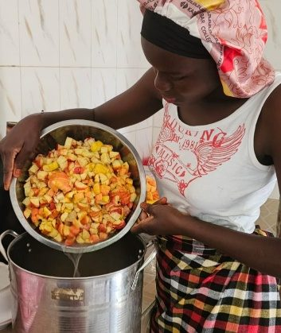
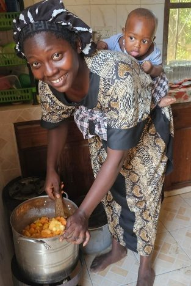
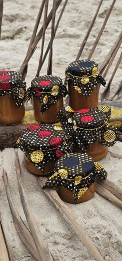
Im ILA SINNING Projekt wird Marmelade auf Gasflamme eingekocht
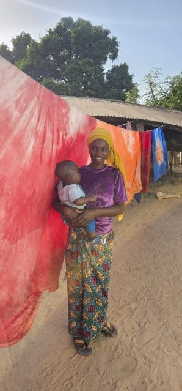
Foto: Fatouma vor ihren Produkten
ONE LOVE – ONE HEART lässt junge Frauen im Handwerk ausbilden. Gleichzeitig werden sie an der Ausbildungsstätte alphabetisiert und lernen Englisch, die Amtssprache. Nach der Ausbildung arbeiten sie selbstständig weiter. Sie können ihre Produkte an uns verkaufen oder Aufträge von anderen annehmen, ganz wie sie möchten. Kaufen kann man die Einzelstücke entweder in Gambia, in Deutschland über ebay-Charity ILA SINNING oder auf La Gomera.
Mit dem Erlös aus dem Verkauf ermöglichen wir weitere Ausbildungen.
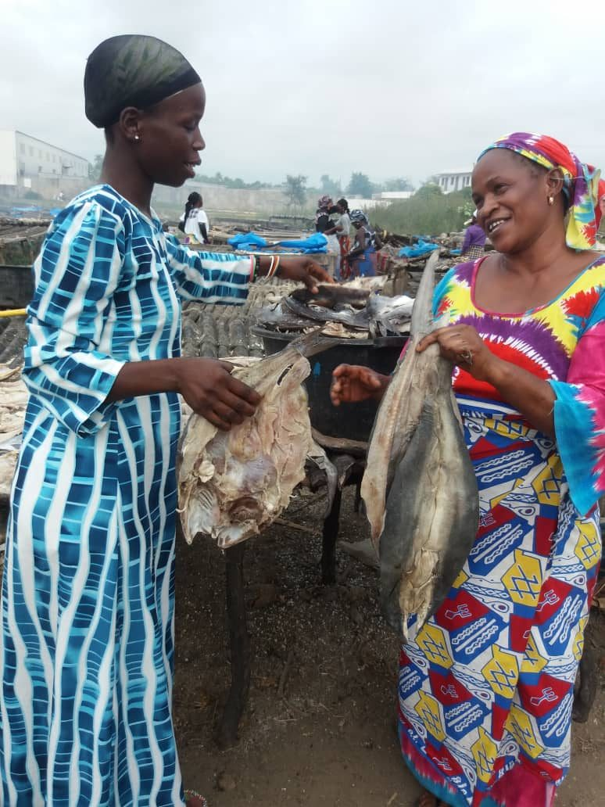
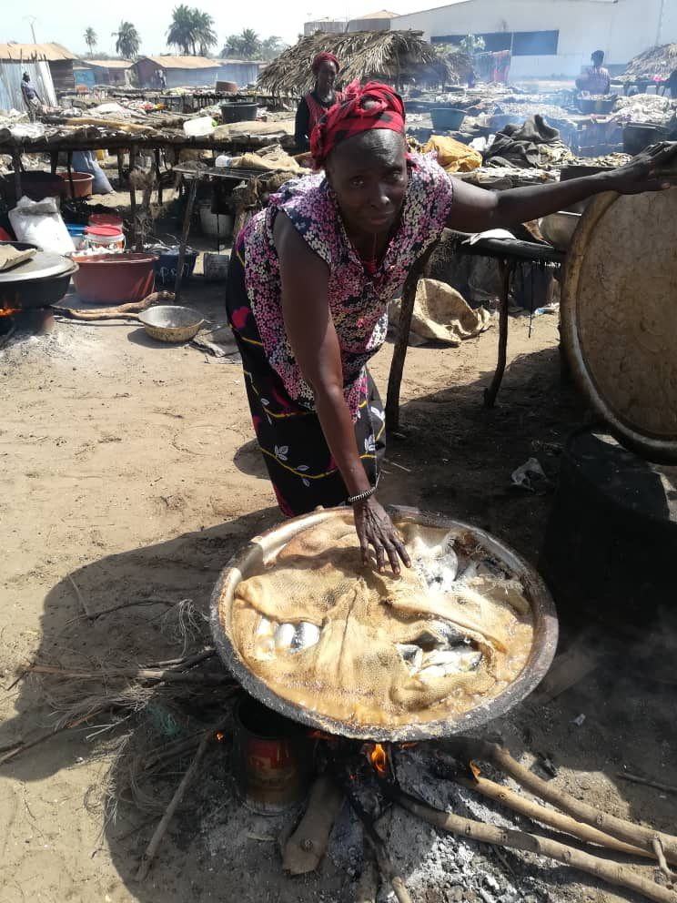
Frauen in Sanyang beim Fischtrocknen. ONE LOVE – ONE HEART e.V. finanziert das Equipment. Ein großer Beitrag zur Ernährung der Familie.
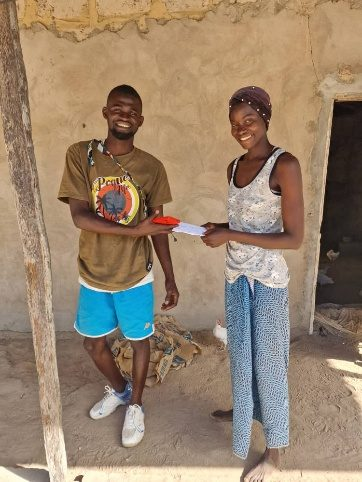
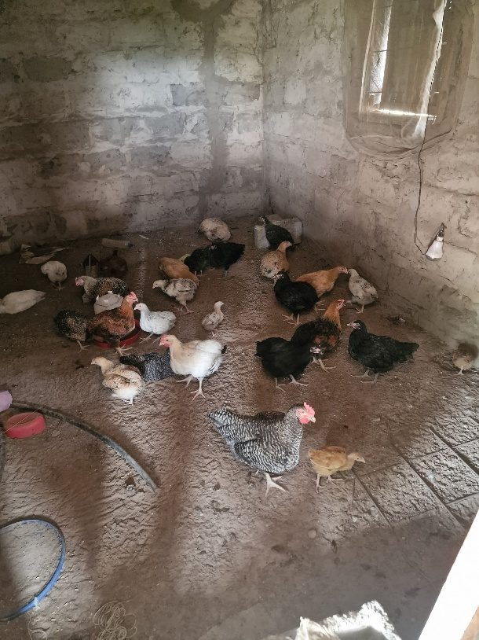
Eine Hühnerfarm in Marakissa wird gegründet. ONE LOVE – ONE HEART e.V. stellt das Equipment und die Küken bereit. Die Alleinerziehende finanziert damit das Einkommen für sich, ihre Tochter und ihre Mutter.
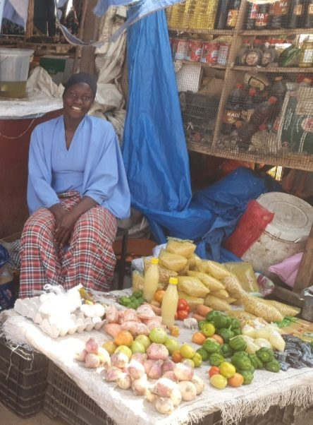
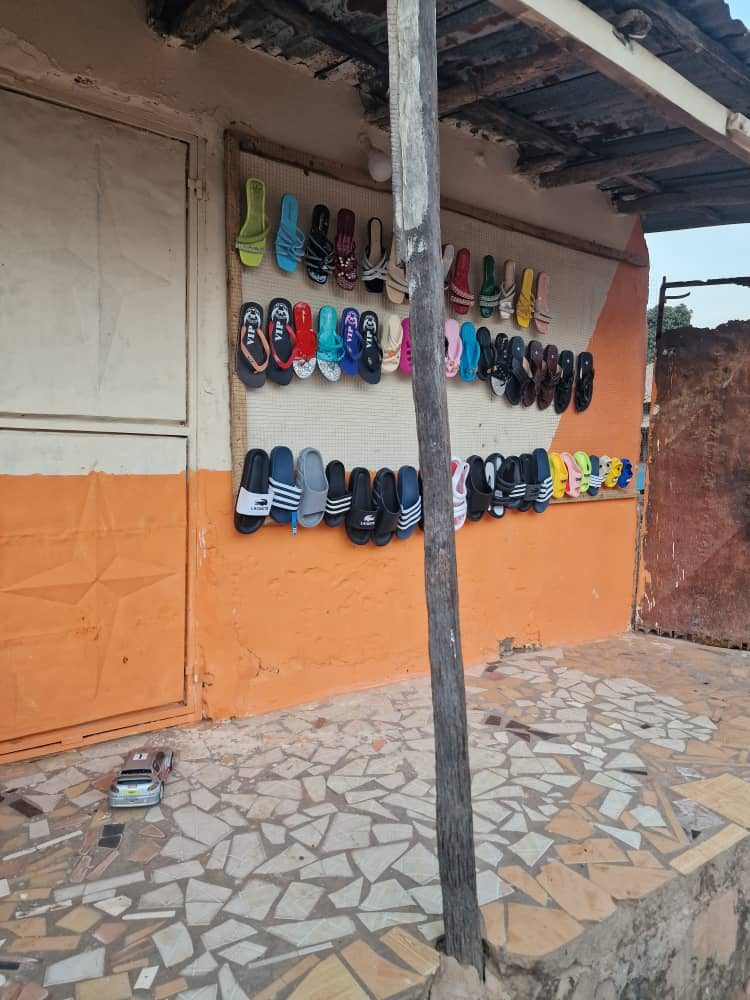
Stand auf dem Markt in Tanji. Die erste Finanzierungsspritze kam von ONE LOVE – ONE HEART e.V.
Ein verfallener Laden wird renoviert und wieder betrieben. Jetzt werden nicht mehr nur Erdnüsse, sondern auch Schuhe, Waschmittel, Obst und Holzkohle verkauft.
Unterstütze uns, Gambierinnen zu unterstützen!